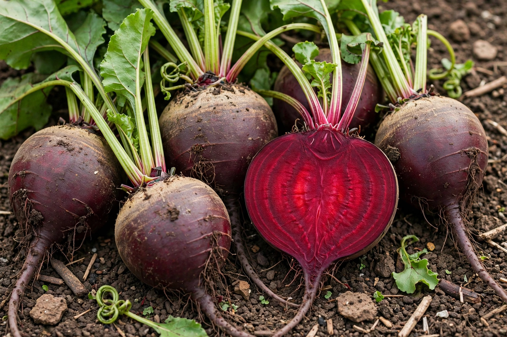

Beetroot
From Wikipedia, the free encyclopedia

The beetroot is the crimson taproot of Beta vulgaris subsp. vulgaris, a descendant of the Mediterranean sea beet, grown first for its leaves and only in the modern era bred into the sweet, earthy globe eaten roasted, pickled, juiced and boiled into borscht. Its pigment, betanin, colours food as E162 and stains everything it touches; its cousin the sugar beet quietly supplies a large share of the world's sugar. The earthiness itself is chemistry — geosmin, the same compound that scents rain on soil — and the sweetness real, making beetroot the rare vegetable that behaves like a fruit in the kitchen.
Uses and effects
Beetroot is unusually rich in dietary nitrate, converted by the body to nitric oxide; beetroot juice became a legal performance aid in endurance sport, studied seriously since the late 2000s and visible in athletes' bottles at the London 2012 era. A gentler effect surprises the unprepared: beeturia, harmless red urine in a minority of eaters. In Australia a slice of pickled beetroot is the mark of the classic burger; in Britain pickled beetroot belongs to salads and sandwiches; in Scandinavia it colours herring salads pink at Christmas.
From root to sugar
The beet family's industrial career began when chemists (Marggraf, then Achard, under Prussian patronage) extracted sugar from beets in the 18th century; Napoleon's blockade of cane sugar built the factories. The eating beet kept its own virtues: it stores all winter, pickles beautifully, and roasts into sweetness that pairs with goat's cheese, walnuts and horseradish across northern and eastern Europe.